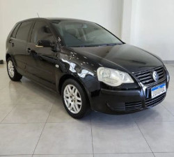

Polo 1.6 Ano 2008/2009, Km 243.000, Vidros e travas elétricas, Ar condicionado (necessita reparo), Retrovisores elétricos com seta e Tilt Down Piloto Automático, Pára-brisa com sensor de chuva e retrovisor fotocrômico.
Telefone para contato: (38)99123-5432
Novo motor à combustão interna 2.0L DOHC 16V e:HEV, Rodas Liga leve 17", myHonda Connect, Ar-condicionado Digital com a função de ajuste automático de temperatura, Carregador por indução (wireless) para celular.
Interessados acesse:Site oficial Honda